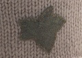

|
||
Premium Patterns Wintry Mix Mitts Love Bytes HawkeyeFree Patterns Kiddie Cadet Summerlin Ruffled Scarf Seamless DS Sock Simply Seamless Pouch Myriads of MushroomsExtras DIY Mitten Blocker Felt Patch Tutorial Yarn Dyeing Tutorial Needle Pouches Knitting Journal |
July 12, 2007 - Posted by Grace SchneblyOoo La La Luz!Before starting on my next project, which will be the Flower Basket Shawl by Evelyn A. Clark, I decided to finish up a UFO that has been sitting around for way too long. I left the La Luz Eye Mask pinned out since June 26, and since my grandma’s birthday has come and gone, I figured that I better hurry up and get it sent to her! Project Specs Have you ever had one of those FO’s that’s always out in plain sight just staring you in the face making you guilty? Well this was one of those projects for me! I felt really guilty because it is due to be a present for my grandma’s birthday, and is now way overdue. The main reasons I put off this project were because I didn’t want to make the pattern piece for the lining and I didn’t want to do all of that seaming. Well I am glad I finally sat down for an hour this morning and finished it!
The pattern was simple and really is a beginner project. You only need to be able to knit, purl, and do basic increases and decreases. However I did catch an error in first row of the pattern, which is pretty much just a typo. At the end of the Row 1 it says, “knit to last 3 sts, M1, k1”, instead you should knit to the last stitch then M1, k1. To make the pattern for the lining I drew out a ½ inch grid onto a piece of paper then pinned the mask out and traced the curves. I wanted to make sure that the pattern was symmetric and making the grid really helped. The only hint that I have for making the inner pouch is to not fill it too full; you want to make sure that it can still mold to your face when you wear it. I left maybe a inch unfilled, but you can easily get the correct firmness by pinning closed the opening and then testing it out. Also I added only a half cup of dried lavender and it is still really potent. I am actually a little concerned that it a little too potent and will cause my grandma’s allergies to act up. My family is kind of sensitive to perfumey smells so I hope it will be fine. I purchased the dried lavender at the South End Open Market here in Boston and got the flax seeds from Whole Foods. I tried getting the lavender at Whole Foods but they looked at me like I was crazy when I asked at the register, the dried foods section, and the aromatherapy section. Seaming went really smoothly. I can’t believe that I actually kind of enjoyed it! I used my Stitch n’ Bitch book as a reference for the horizontal seaming (see page 77-78) and KnittingHelp.com for the tutorial on mattress stitch. This is one of the very few times that I have ever seamed anything, that’s just how much I hate it! However I think it turned out great, and couldn’t be happier with the results. So would I recommend this pattern? If you want a quick (it should have really only taken me like 3 days instead of 3 weeks) and easy project, then yes. You don’t have to use silk yarn; I could imagine making a luxurious one out of cashmere or something. I really like wearing it because it blocks out the light so well and the weight just feels relaxing, so I will probably make another one for myself in the future. It would also make a great quick gift or stocking stuffer. My only concern is if gets wet it could cause the flax and lavender to get moldy. Also I don’t know how long flax seeds last when they are open to the air. On the package it says “because of the significant fat content of flax seed, we recommend storing in the refrigerator or freezer to maximize shelf life.” Hopefully this won’t be a problem… but I wonder how long this eye mask will last. |
   Recent ReviewsRecent Posts
 Our Favorites
|
| © 2007 KathrynIvy.com | ||

{kind=link}